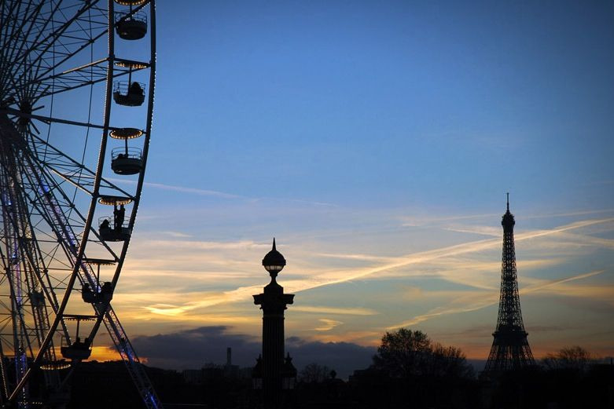

Sun, 14 Nov 2010 17:51:10 · paris · france · city · travel · photography · scene
twilight in paris taken from le jardine du

Twilight in Paris, taken from Le Jardine du Luxembourg.
Sun, 14 Nov 2010 17:51:10 · paris · france · city · travel · photography · scene

Twilight in Paris, taken from Le Jardine du Luxembourg.